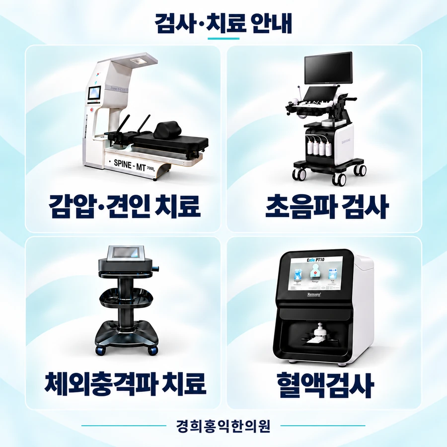
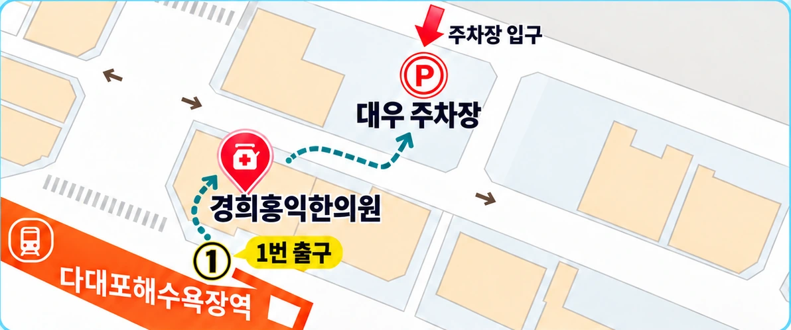

대표원장
허진혁
경희대학교 한의과대학 졸업
주요 약력
- 미국 근골격 초음파 자격(RMSK)
- 체형사상학회 회원
- 대한침도의학회 회원
- 대한한의영상학회 회원
허리·목·관절 통증과 움직임을 살펴봅니다.
관련 글 보기초음파를 활용한 검사와 약침 진료를 안내합니다.
관련 글 보기체질과 증상, 생활 습관을 함께 살펴봅니다.
관련 글 보기사고 후 나타나는 통증과 불편을 살펴봅니다.
관련 글 보기체중 관리와 식습관에 대해 상담합니다.
관련 글 보기초음파 검사, 혈액검사, 감압·견인 치료, 체외충격파 치료
안내 이미지
대표원장
경희대학교 한의과대학 졸업
진료원장
동의대학교 한의과대학 졸업
공휴일 진료는 전화로 확인해 주세요.
전화 문의051-262-0780다대포해수욕장역 1번 출구 앞

대우 주차장 무료 주차주차 후 접수 시 말씀해 주세요.
네이버 지도